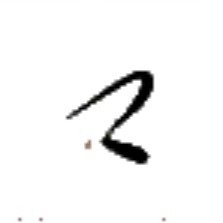
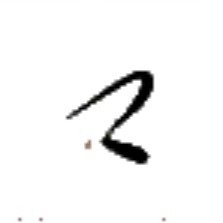
ク· 【物】
[名詞] 物
[略号] （伝統文法論における）名詞
[接尾辞] ～する物
基本的に『～を』の位置を埋める。
彼之言物極混混 チャㇷ゚⤴ア·チェㇷ゚→ク·キㇳ·テゥン→テゥン→
【彼之言物極混混】
彼の発言は非常に混沌としている。
口物 ヤㇺ→ク· 【口物】
[名詞] 食べ物、食料
[動詞] 食べる、食事する
此倉口物貧 カー→リー→ヤㇺ→ク·ヘイ⤴
【此倉口物貧】
この倉庫は食べ物が少ない。
何時我等口物 ナン⤴カㇰ·パイ⤴ゲゥ·ヤㇺ→ク·
【何時我等口物】
いつ私たちは食事しますか？
何度私たちは食事しますか？
互言 ホアㇳ→チェㇷ゚→ 【互言】
[動詞] 会話する
互心男 ホアㇳ→ヒアー→キー→ 【互心男】
[名詞] 男恋人
互心女 ホアㇳ→ヒアー→ザー→ 【互心女】
[名詞] 女恋人
互心善 ホアㇳ→ヒアー→カイㇳ· 【互心善】
[動詞] 愛し合う
互抗 ホアㇳ→マㇰ→ 【互抗】
[動詞] 拮抗する
互集 ホアㇳ→ダㇳ⤴ 【互集】
[動詞] 集まる、集合する
互別 ホアㇳ→パウ→ 【互別】
[動詞] 相異なる、差がある、異なる
此互 カー→ホアㇳ→ 【此互】
[名詞] あれこれ、諸々
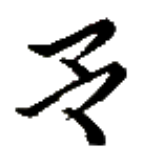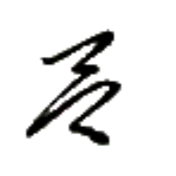
キㇳ· 【極】
[前置助動詞] とても
[連体詞] 多くの、多量の
極極 キㇳ·キㇳ· 【極極】
[前置助動詞] 非常に、極めて
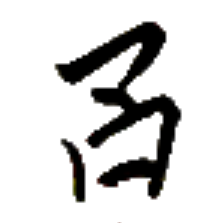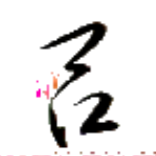
チェー→ 【其】
[名詞] それ
[連体詞] その
其処 チェー→ホエゥ· 【其処】
[場所詞] そこ
 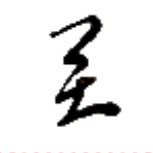
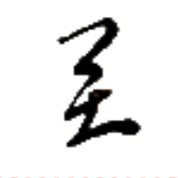
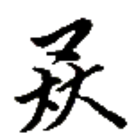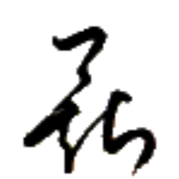
ホウ→ 【豊】
[状態動詞] 量が多い
[状態動詞] 裕福である
豊於 ホウ→イェ· 【豊於】
[状態動詞] ～に満ちている
豊門 ホウ→ギアウ→ 【豊門】
[名詞] ホーギャウ、オキヤウ（アイル共和国の都市名）
都市名としては 豊門【豊門】と表記するのが普通だが、玩具メーカー 骨門遊刀【骨門遊刀】のように、都市名においても 骨門【骨門】と表記することがある。なお、郡名の場合は基本的に 骨門【骨門】と表記する。
豊族 ホウ→ニㇺ⤴ 【豊族】
[連体詞] 多民族の
豊族国 ホウ→ニㇺ⤴ズィㇷ゚→ 【豊族国】
[名詞] 多民族国家
豊民島 ホウ→ビアー→ドㇷ゚→ 【豊民島】
[名詞] フロン・ビェーイシュ島（リナエスト・オルス共和国を構成する島の一つ）
体豊 タㇳ⤴ホウ→ 【体豊】
[状態動詞] 太っている
風豊 プアー⤴ホウ→ 【風豊】
[状態動詞] 非常に面白い
星豊 ペゥㇳ⤴ホウ→ 【星豊】
[状態動詞] 年老いている
直豊 ヨウ→ホウ→ 【直豊】
[名詞] ヨコ（人名）
牛豊 ヨウ⤴ホウ→ 【牛豊】
[名詞] ヨコ（人名）
地豊豆 ホエゥㇷ゚⤴ホウ→クオㇳ→ 【地豊豆】
[名詞] 落花生、ピーナッツ
字豊論貧 マン→ホウ→ツイ→ヘイ⤴ 【字豊論貧】
[四字熟語] 無駄に多種類の字や語を使っておきながら、伝えたい内容が薄いこと
リン王は、言語政策を成功させるべく『限られた文字種で万物を書くことが非常に優れており偉いことである』という考えを官民の間に広めて根づかせることに極めて力を注いでいたため、今なお燐字書記言語の伝統はそこに強く影響されている。ゆえに、燐字圏においては、燐字を 700 字知っていれば生活に支障をきたすことがないと言われている。
 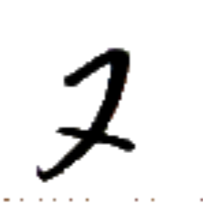
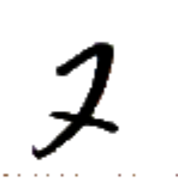
ナㇷ゚→ 【九】
[連体詞] 9 個の
[名詞] 9
ガㇰ→ 【激】
[前置助動詞] 甚だしく
[後置様態副詞] 素早く
激激 ガㇰ→ガㇰ→ 【激激】
[後置様態副詞] 極めて素早く
激之 ガㇰ→ア· 【激之】
[前置助動詞] すぐに
激付 ガㇰ→クン⤴ 【激付】
[名詞] 使用したいときにすぐに取り出したくなるものをまとめて置いておくための場所
[名詞] （計算機）レジスタ
風激 プアー⤴ガㇰ→ 【風激】
[状態動詞] 風が強い
字積 マン→ショㇺ→ 【字積】
[名詞] マニソマ（カードゲーム）
字豊論貧 マン→ホウ→ツイ→ヘイ⤴ 【字豊論貧】
[四字熟語] 無駄に多種類の字や語を使っておきながら、伝えたい内容が薄いこと
リン王は、言語政策を成功させるべく『限られた文字種で万物を書くことが非常に優れており偉いことである』という考えを官民の間に広めて根づかせることに極めて力を注いでいたため、今なお燐字書記言語の伝統はそこに強く影響されている。ゆえに、燐字圏においては、燐字を 700 字知っていれば生活に支障をきたすことがないと言われている。
如字 エゥㇺ·マン→ 【如字】
[名詞] バーニワイㇺ、バニワイム（人名）
官字 ユー→マン→ 【官字】
[名詞] 公用書体
現代では、楷書相当の書体が対応する。
風字 プアー⤴マン→ 【風字】
[名詞] 俗用書体
おおむね漢字でいうところの行書・草書に相当。
歪字 ブㇷ゚⤴マン→ 【歪字】
[名詞] 訛字（他の字の構成要素に影響されるなどし、字の構成要素が一部変化すること）
倉字 リー→マン→ 【倉字】
[名詞] フォント、コンピューターフォント
圧字 ベゥㇳ⤴マン→ 【圧字】
[動詞] 印刷する
圧字機 ベゥㇳ⤴マン→キㇰ→ 【圧字機】
[名詞] 印刷機、プリンター
撃字 クㇳ⤴マン→ 【撃字】
[動詞] 文字を印刷する、印字する、文字を入力する
撃字機 クㇳ⤴マン→キㇰ→ 【撃字機】
[名詞] 文字入力装置、キーボード
刀字 ガウ⤴マン→ 【刀字】
[名詞] 碑文書体
手書き以前の書体で、現代では専ら装飾に用いられる。漢字でいうところの篆書体に似る。
刀之字 ガウ⤴ア·マン→ 【刀之字】
[名詞] 彫られた字
叫二字 プアㇰ→イㇰ⤴マン→ 【叫二字】
[名詞] パイグ語の発音現象の一つ。善日【善日】などに見られる。
筆声字集 クアー⤴スオㇷ゚⤴マン→ダㇳ⤴ 【筆声字集】
[名詞] 音写語、音訳語、字から語源を見てとりづらい語
上周字集 ザウ⤴セイ⤴マン→ダㇳ⤴ 【上周字集】
[名詞] 主語
軸之字集 ラー→ア·マン→ダㇳ⤴ 【軸之字集】
[名詞] （文の成分としての）動詞
下周字集 ウㇳ⤴セイ⤴マン→ダㇳ⤴ 【下周字集】
[名詞] 目的語
網墨倉字 トゥㇰ⤴フオウ⤴リー→マン→ 【網墨倉字】
[名詞] ビットマップフォント
骨軸倉字 ホウ⤴ラー→リー→マン→ 【骨軸倉字】
[名詞] 丸ゴシック調のフォント
集意之字 ダㇳ⤴シャー⤴ア·マン→ 【集意之字】
[名詞] 会意文字、それぞれの構成要素の意味を合わせた文字
真綿之字 プㇳ·ホン→ア·マン→ 【真綿之字】
[名詞] 真に軽い音節
パイグ語の文法用語。中調であり末子音を持たないような音節を指し、これらの音節は基本的に機能語として振る舞う。
意之別字 シャー⤴ア·パウ→マン→ 【意之別字】
[名詞] 歴史的には同音/類音の単語を表していた字が、単語の意味の差に基づいて複数に分化するようになったもの
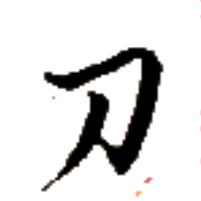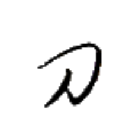
プアー⤴ 【風】
[名詞] 風
[文接続詞] 〔くだけた口語で〕でも、だけど
文接続詞としての用法は、別而【別而】の発音が崩れたものである。
風在 プアー⤴アイㇺ⤴ 【風在】
[状態動詞] 面白い、興味深い
風無 プアー⤴ムン→ 【風無】
[状態動詞] つまらない
風豊 プアー⤴ホウ→ 【風豊】
[状態動詞] 非常に面白い
風激 プアー⤴ガㇰ→ 【風激】
[状態動詞] 風が強い
風字 プアー⤴マン→ 【風字】
[名詞] 俗用書体
おおむね漢字でいうところの行書・草書に相当。
風定 プアー⤴ホアㇷ゚→ 【風定】
[連体詞] 事実上標準となっている、デファクトスタンダードの
風火米 プアー⤴カン→モウ→ 【風火米】
[名詞] 蒸しご飯
声風 スオㇷ゚⤴プアー⤴ 【声風】
[名詞] 知らせ
墨風 フオウ⤴プアー⤴ 【墨風】
[名詞] フォプヮ（人名）
天風 ズィュㇳ⤴プアー⤴ 【天風】
[名詞] 天気
嗅風 サイ→プアー⤴ 【嗅風】
[名詞] におい、香り
綿風 ホン→プアー⤴ 【綿風】
[名詞] ホンパ、ホンプア（地名）
手風 ホㇷ゚→プアー⤴ 【手風】
[動詞] 成功する、うまくいく、チャンスを掴む
悪風 ノン→プアー⤴ 【悪風】
[名詞] 風邪
於我悪風在 イェ·パイ⤴ノン→プアー⤴アイㇺ⤴
【於我悪風在】
私は風邪を引いている。
受悪風 グㇰ⤴ノン→プアー⤴ 【受悪風】
[動詞] 風邪を引く
与悪風 トゥイ⤴ノン→プアー⤴ 【与悪風】
[動詞] 風邪をうつす
 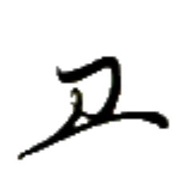
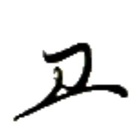
シェㇺ→ 【月】
[名詞] （暦の）月
[名詞] シェム（人名）
月光水行 シェㇺ→アイㇰ⤴ヌアー⤴モㇰ→ 【月光水行】
[四字熟語] 月は光り、水は流れる。
天月 ズィュㇳ⤴シェㇺ→ 【天月】
[名詞] （天体の）月
貝月 ディㇳ→シェㇺ→ 【貝月】
[名詞] ディトシェム、ディツェン（人名）
大月島 マー→シェㇺ→ドㇷ゚→ 【大月島】
[名詞] リナエスト本島、ブリェーシャン島（リナエスト・オルス共和国を構成する島の一つ）
皇月島 タㇺ⤴シェㇺ→ドㇷ゚→ 【皇月島】
[名詞] タムシエルミワ島（ヴェフィス共和国を構成する島の一つ）
一下月 エゥㇳ⤴ウㇳ⤴シェㇺ→ 【一下月】
[時間詞] 来月
一上月 エゥㇳ⤴ザウ⤴シェㇺ→ 【一上月】
[時間詞] 先月
赤青黒月 コㇰ→ヌオㇰ⤴フオㇰ⤴シェㇺ→ 【赤青黒月】
[名詞] 赤・青・黒・黄色
月色【月色】が「黄色」を意味するのはパイグ語だけであるため、他の燐字圏の人間にも伝える必要があるときは 赤青黒硫【赤青黒硫】と表記されることも多い。
骨谷 ホウ⤴キン→ 【骨谷】
[名詞] ホーキン、オキン（地名）
グアー⤴ 【弓】
[名詞] 弓、（セッカイクの）弓
[名詞] 銃
抗弓 マㇰ→グアー⤴ 【抗弓】
[名詞] （弾性力で矢をとばす普通の）弓
[名詞] セッカイクの序盤戦術のひとつ
定弓 ホアㇷ゚→グアー⤴ 【定弓】
[動詞＋目的語] 弓を構える
[名詞] セッカイクの序盤戦術のひとつ
馬弓兵 マウン→グアー⤴カウㇰ⤴ 【馬弓兵】
[名詞] （特にヴェフィスの）騎馬兵、（セッカイクの役）馬弓兵、マウングワカウク
手刀弓之 ホㇷ゚→ガウ⤴グアー⤴ア· 【手刀弓之】
[連体詞] 攻撃性のある
 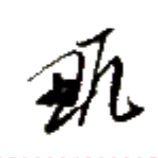
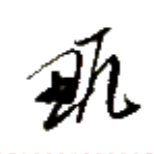
マㇰ→ 【抗】
[動詞] 反抗する、反発する、抗う
抗弓 マㇰ→グアー⤴ 【抗弓】
[名詞] （弾性力で矢をとばす普通の）弓
[名詞] セッカイクの序盤戦術のひとつ
互抗 ホアㇳ→マㇰ→ 【互抗】
[動詞] 拮抗する
無抗行処 ムン→マㇰ→モㇰ→ホエゥ· 【無抗行処】
[四字熟語] 向かうところ敵なし
[名詞] セッカイクの役のひとつ
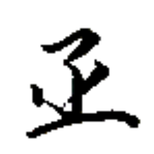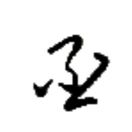
バイㇳ· 【膠】
[名詞] ゼリー状の食品
[状態動詞] 物にくっつく、粘着性がある
膠米 バイㇳ·モウ→ 【膠米】
[名詞] 粘り気のある米
果膠 トゥアー→バイㇳ· 【果膠】
[名詞] フルーツのジャム
猫膠 ネゥー⤴バイㇳ· 【猫膠】
[名詞] ヌバイト（人名）
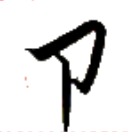
 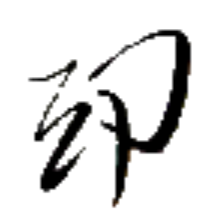
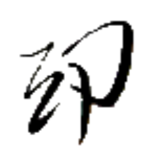
足衣 シー→タㇰ→ 【足衣】
[名詞] 脚絆、ゲートル
体衣 タㇳ⤴タㇰ→ 【体衣】
[名詞] （帽子以外の）衣服
四之衣 アㇷ゚→ア·タㇰ→ 【四之衣】
[名詞] アパータ、アープアターク、アーパターク
ラネーメやヴェフィスの伝統的な衣服の一つ。袖があり、四枚の布を繋いで作られる。素材は綿や麻が多い。
二之衣 イㇰ⤴ア·タㇰ→ 【二之衣】
[名詞] イークアターク、イーカターク
ラネーメやヴェフィスの伝統的な衣服の一つ。袖がなく、二枚の布を繋いで作られる。素材は綿や麻が多い。
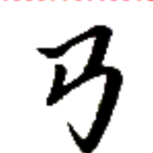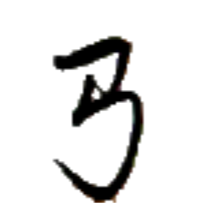
ニエㇰ→ (俗に) ニエㇰ⤴ 【連】
[動詞] 繋ぐ、結ぶ
[名詞] （カードゲームで）同じ色で数字が連続するようなカードの組み合わせ
此橋連二集 カー→ミㇳ·ニエㇰ→イㇰ⤴ダㇳ⤴
【此橋連二集】
この橋は、2つの郡を繋いでいる。
連友 ニエㇰ→ヒー→ 【連友】
[名詞] ニーンセッカイクのゲームルールのひとつ
連門 ニエㇰ→ギアウ→ 【連門】
[名詞] ハイパーリンク
連将 ニエㇰ→ワイ→ 【連将】
[名詞] セッカイクの戦術のひとつ
連道集 ニエㇰ→ポウ→ダㇳ⤴ 【連道集】
[名詞] アイル共和国交通省
連撃獣裁 ニエㇰ→クㇳ⤴ザウㇷ゚→シュー→ 【連撃獣裁】
[名詞] 賭博の一種
連将撃裁 ニエㇰ→ワイ→クㇳ⤴シュー→ 【連将撃裁】
[四字熟語] しっかりと準備をした上で思い切った行動をすること
祖国 ゾウ→ズィㇷ゚→ 【祖国】
[名詞] 祖国、故郷の国、先祖代々の国
 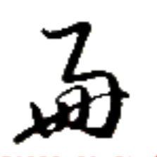
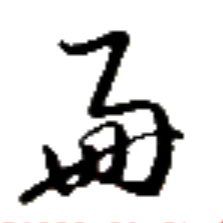
 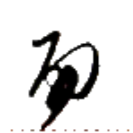
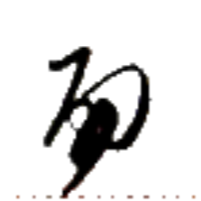
馬虎之別 マウン→ダウ⤴ア·パウ→ 【馬虎之別】
[名詞] 知る人ぞ知る、分かる人には分かる
燐字を知っている者は 馬【馬】と 虎【虎】の字を容易に区別できることから、慣れていれば区別ができるが、不慣れな者には区別が難しいようなことを表す。
 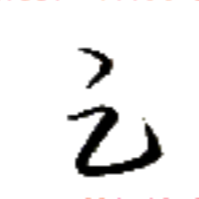
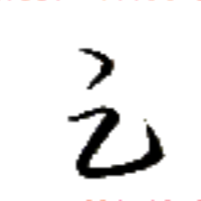
ブㇷ゚⤴ 【歪】
[動詞] 歪む、曲がる、変形する、ねじれる
歪術 ブㇷ゚⤴ズィㇳ→ 【歪術】
[名詞] （セッカイクで）王が他の同色駒の代わりとなること
[名詞] 語形変化
歪字 ブㇷ゚⤴マン→ 【歪字】
[名詞] 訛字（他の字の構成要素に影響されるなどし、字の構成要素が一部変化すること）
歪声 ブㇷ゚⤴スオㇷ゚⤴ 【歪声】
[名詞] パイグ語の声調で、低く長く発音するもの
この辞書では「⤴」で表記される。